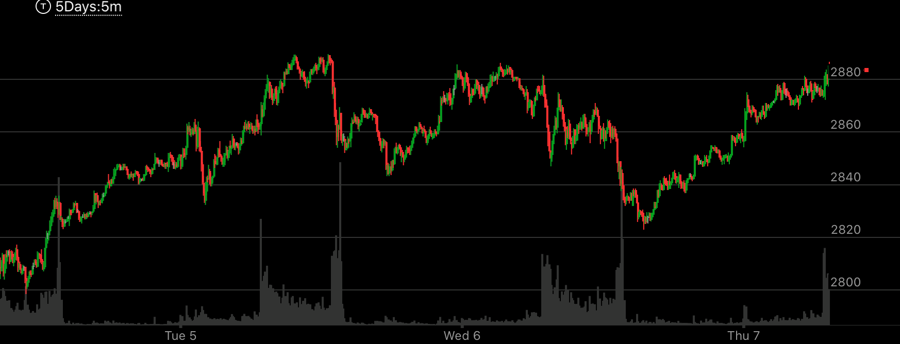
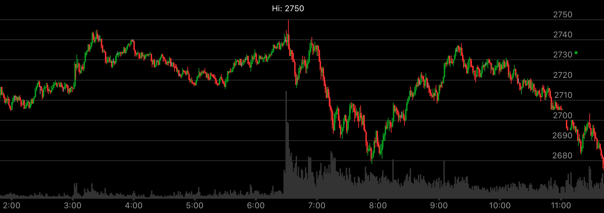

同向内部加速走势
- 大盘已经积累了一定的升幅或者跌幅，存在回调的动力。
- 本次走势还没有回调过，所以可以回调。
- 这个回调方式，是用快速大幅反向运动，然后再次同向运动。这个同向运动的不到前面高点，中间分为两段或者几段。
最后一段是加速。但是这个加速没有创走势新极点。这样，它的回调位置，一定会低于加速运动的开始。

图示：Wed开盘后，快速下跌，2880跌倒了2850，然后立刻上涨，形成了两段上涨走势，
下来的时候，在2860附近长时间震荡。最后大跌。跌破了2850.这个说明它会大幅回调，但是未来会反弹，创新高。

图示：6：30创新高后，立刻下来。然后出现了上涨的两段走势。这个说明，这个没有反转。
但是会大幅回调。加上这个已经是第二天上涨。第一天涨了100点，第二天也涨了100点。有了足够的下跌动力。7：00大盘先快速下跌，
然后很快拉回原位，再次缓慢下跌。这个会跌破2680的低点。